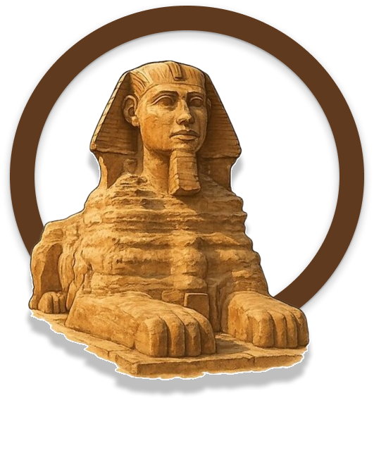

A trajetória da escrita que marcou o Egito Antigo.
Hieróglifos são os símbolos de um antigo sistema de escrita utilizado no Egito Antigo.
Com o passar do tempo passou a ser utilizado em locais e objetos ligados ao sagrado, como as paredes internas das pirâmides, templos e o Livro dos Mortos.
A escrita hieroglífica foi utilizada pelos egípcios por mais de 3.000 anos e por volta do século IV, ela deixou de ser usada, e a forma como era lida também acabou sendo esquecida.
Por que a escrita egípcia recebeu esse nome?
O nome foi dado pelos gregos antigos, que observaram o uso desses símbolo sem contextos religiosos e rituais, considerando-os uma forma de comunicação divina. Os antigos egípcio chamavam a escrita de medju-netjer (ou medu netjer), que significa "palavras dos deuses". Esse nome refletia a importância da escrita na religião e na cultura egípcia, sendo utilizada em templos, monumentos e textos sagrados
